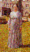
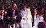

1989
1989 Motto: "Koreas förening".
. Panda, bilfabrik i Kina.
. Segye Ilbo, daglig tidning i Korea.
10 jan Kook Jin Nim och Soon Jin Nim välsignas.
11 jan 72 par från 2:a gen, välsignas.

12 jan 1275 par välsignas i Korea.
19 mar Tidsåldern är inne för stam-Messias.
7 apr 42+138+57 enkla par (en person i fysiska + en person i andliga världen) välsignas i New York.
23 jun Ceremonidagen för Ett hjärta.
Världen:
4 juni 1989 inträffade den så kallade massakern på Himmelska fridens torg i Beijing (Peking).
Arméförband gick då till attack mot 200 000 demonstranter.
31 aug Pal-chong-shi ceremonin
Jag har utropat Pal-Chung-ceremonin i Alaska den 31 augusti 1989. Resultatet av detta är att ingen mer
gottgörelse för mänskligheten eller världen behöver betalas. Det betyder att vart jag eller medlemmar i
Enighetskyrkan än gör i den hör världen, kommer förföljelse inte längre att vara närvarande.
Ceremonin för etableringen av de åtta stegen.
I Guds försyn kunde aldrig antalet åtta etableras. Antalet åtta symboliserar cirkeln i himlen och cirkeln på
jorden.
Månaden augusti 1989 som är det första äret efter proklamerandet av Dagen för nationen av en enad värld, har
särskild betydelse.
Den 31 augusti 1989 deklarerade jag Ceremonin för åtta steg i Kodiak, Alaska. Den morgonen talade jag om det, men ni skulle inte ha trott det och sagt "vad är nu detta...?" När far sa att världen snabbt skulle omvändas, skulle ni inte ha trott på det. Ni skulle ha tänkt: "Vad är nu detta...?"
Därefter, i september, deklarerade Far föräldrskap. Far deklarerade detta slutliga på jorden på världsnivå. Om det, när sant föräldraskap uppträder på jorden, kan det inte finnas någon satan och ingen syndig värld som dagens, kan vi dra slutsatsen att satan måste dra sig tillbaka när väl Föräldrskap är etablerat. Efter den deklarationen, den 9 november 1990, föll Berlinmuren.
3 sep Tidsåldern för Himmelskt föräldrskap. Tack vare av att ha proklamerat ceremonin för Etablering av de åtta stegen, proklamerade Sanna föräldrar Himmelskt föräldraskap i North Garden, Kodiak, Alaska, den 1 september, 1989. Nu kunde fallna människor välkomna Sanna föräldrar och Sanna föräldrar kunde älska Kain och Abel fullständigt.
30 sep Dr. Young Oon Kim
 gick till den andliga världen.
gick till den andliga världen.
3 nov Seung Hwa -ceremoni för Hong
Halmonim, (Hak Ja Hans mor), 
hädanefter kallad "Dae Mo Nim".


Från hennes Seung Hwa ceremoni


Världen:Berlinmuren faller!
En barriär som under perioden 13 augusti 1961 till 9 november 1989 åtskilde Väst- och Östberlin.


• Sent 1980-tal, tidigt 1990-tal: Dr Sang Hun Lee och Unification Thought Institute började formellt använda
begreppet ”give-and-receive action” i uppdaterade texter, främst i "Fundamentals of Unification Thought" (1991)
och "New Essentials of Unification Thought" (1993).
Översättarna påpekade att ordet ”take” (ta) på engelska bar på en innebörd av själviskhet eller tvång, medan
”receive” (ta emot) bättre återspeglade den frivilliga och harmoniska karaktären hos koreanska ordet "susu"
(授受).
• 1996 (Exposition of the Divine Principle): När den nya auktoriserade engelska översättningen av *Wolli
Kangron* publicerades 1996, behöll översättningskommittén uttrycket ”give and take action” i huvudtexten av
hänsyn till den historiska kontinuiteten trots att ”give and receive” vid det laget hade blivit standard i
föreläsningar, predikningar och inom rörelsen.